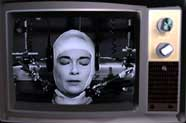

Cecil Turner is the head of The Chrysalis Institute, a psychiatric treatment center in The Rogue River Valley of Southern Oregon.
MODERN PSYCHOLOGY: You've always been on the cutting edge of psychiatric treatment. I remember in the sixties, you were one of the first medical doctors to seriously study Eastern Mysticism and try to utilize meditation and holistic medicine in your therapy.
 CECIL TURNER: Yes. As a child I was always fascinated by the mysticism. In college, I became an avid reader of Hermann Hesse. His books, especially Journey To The East, inspired me to go to India and study with a yoga teacher.
CECIL TURNER: Yes. As a child I was always fascinated by the mysticism. In college, I became an avid reader of Hermann Hesse. His books, especially Journey To The East, inspired me to go to India and study with a yoga teacher.
MP: Your peers must have thought you were a little crazy.
CT: (laughs) Let's just say they made a lot of curry jokes.
MP: And now you're into the Internet.
CT: Yes. I've always been interested in computers. Always knew they would have a huge impact on our world society.
MP: You've got a great Web page for your Institute.
CT: It's a fantastic forum, the Web. A great way to get to share one's ideas.
MP: Do you have online patients?
 CT: Not yet. (laughs) But now there are these things called Synthespians - synthetic actors. I wouldn't be surprised if someday there were synthetic psychiatrists.
CT: Not yet. (laughs) But now there are these things called Synthespians - synthetic actors. I wouldn't be surprised if someday there were synthetic psychiatrists.
MP: Pseudo-psychiatrists?
CT: (raises his eyebrows) Oh, I've known dozens of them already.
MP: So tell me about this new project you're working on.
CT: The Virtual TAT?
MP: Yes.
CT: Well, the original TAT or Thematic Apperception Test was invented in the mid-thirties by Morgan and Murray. It was called "A Method For Investigating Fantasy." A method for eliciting story constructions from patients which are susceptible to interpretation by the psychiatrist.
MP: Whoaa. Could I have the layman's version of that?
CT: Terribly sorry. The patient is shown an image and asked to tell a story based on what he sees.MP: How is this different from a Rorschach test?
CT: Oh, it's very different. With a Rorschach, the patient is asked to describe what he or she sees. "I see a rat. I see the devil. My mother." Et cetera, ad nauseum. But with a TAT, they are asked to tell a tale. The TAT is much richer. Much deeper. The responses are more intricate.
MP: I remember a famous TAT image. A child playing a violin?
CT: Yes. Good example. A drawing of a little boy with a violin. A Rorschach response for this image would be the same for everyone: "I see a little boy with a violin." That's it. There is nothing more. But the TAT responses are extraordinarily different and compelling. For example, "The boy is sad. He wishes he could play baseball with the other kids," or "The boy loves daydreaming about being a concert violinist," or even "The boy hates his mother for making him play the violin." Very telling, that response.
MP: Why is storytelling so important?

CT: We tell stories to ourselves every day. When we drift off into daydreams or fantasies, we are living out little plays in our minds, with ourselves as the protagonists, or heroes. Simply put, the TAT is a brilliant way of finding out what people are thinking on an unconscious level. How they view the world. How they see themselves in this world. And that is how we gain insight in treating the many ills which plague the human mind.
MP: So what is the Virtual TAT?
CT: The Virtual TAT, or V TAT (computer people love acronyms) is something that I am developing. I'm also working to integrate it into a CD-ROM experience with a company here in the Rogue Valley. It's a way people can experiment with a version of the Thematic Apperception Test in their own homes, while exploring the delta between reality and desire. It's the kind of thing you'd share with someone you'd like to make love to.
MP: It sounds fascinating.
CT: It's also quite entertaining.
MP: Entertaining?
CT: Psychiatrists have made the study of the mind boring. But it doesn't have to be that way.
MP: How about a video game where you get to act out your most secret fantasies?
CT: (laughs) We're working on it.